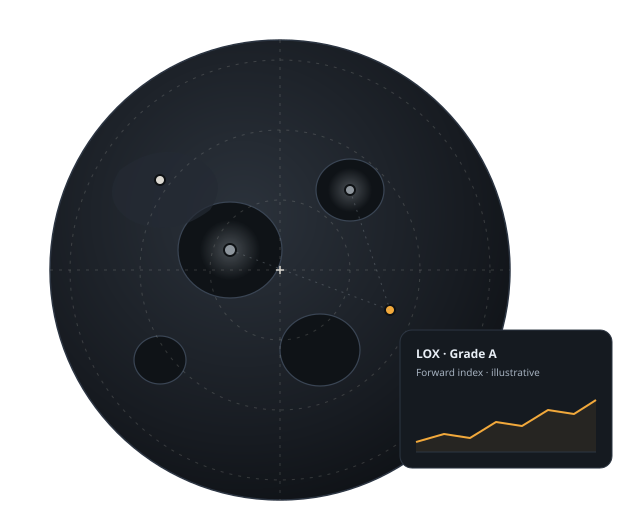

Mare Survey
Resource atlas
Where water ice, oxygen-bearing regolith, metals, and helium-3 are estimated to be, each with a stated confidence level and the data behind it.
Mare /MAH-ray/ · The resource exchange for the Moon
Mare maps lunar resources, tracks what it costs to extract and deliver them, and runs the marketplace where producers, buyers, and financiers trade them.

The problem
Water ice, oxygen, and metals on the Moon could supply missions that today carry everything from Earth. But capital doesn't move on estimates nobody can compare. Before anyone lends against a lunar operation, insures a delivery, or signs a supply deal, three things have to exist.
Resource estimates sit in scattered studies and private datasets, in different units, with confidence rarely stated. Two parties can't agree on what a site holds.
Without a cost basis for extracting and delivering a ton, every contract starts from zero and no position can be valued against anything.
Without standard grades and contract terms, producers can't pre-sell output and buyers can't secure supply. Risk stays where it starts.
Mare Survey · Demo
A fictional south-polar region, the Austral Reach. Select a site to see what Survey estimates is there, how confident the estimate is, and what Ledger expects a delivered ton to cost.

Illustrative data. The Austral Reach, its site names, and every quantity, confidence level, and cost shown are invented for this concept. None of it is a real measurement.
Mare Ledger · Demo
Ledger publishes a reference price for each standard grade, built from cost estimates and revised as missions report real numbers. Here are eight invented quarters of it.
Grade codes and specifications are illustrative, not a real industry standard.
Illustrative data. Periods are fictional (Y1–Y2). Prices are invented and are not quotes, forecasts, or offers.
How the exchange works
Every trade on Mare Exchange runs through the same five steps, and each step leaves a record the other parties can check.
Producer
A producer lists a site and the volume, grade, and delivery window it intends to supply.
Mare Survey
The listing is checked against the atlas. Its confidence level is attached to the offer.
Mare Ledger
The offer is referenced to the Ledger index for that grade, so both sides start from the same number.
Mare Exchange
A buyer commits to a forward contract or supply agreement on standard terms.
Mare Steward
Extraction and delivery are tracked against the contract, and delivery is certified to grade.
Mare Exchange is a design concept. Nothing on this site is an offer of, or invitation to buy, any financial product.
Products
It's the neutral information and market layer a lunar economy needs before it can be financed: a geological survey, a commodities price index, and an exchange in one place, with a fourth product to keep it accountable.
Resource atlas
Where water ice, oxygen-bearing regolith, metals, and helium-3 are estimated to be, each with a stated confidence level and the data behind it.
Cost and price index
Estimated cost per ton to extract, refine, store, and deliver each resource at each site, updated as missions report data.
Marketplace
Forward contracts and supply agreements between producers and buyers, settled against standardized quality grades such as LOX Grade A.
Resource management
Site allocation, extraction tracking, and reporting for operators and agencies, so resources are used sustainably and claims don't conflict.
Who it's for
Prove your reserves and lock in buyers before you launch.
Secure propellant and supplies at a known price.
Standardized data to underwrite and lend against lunar contracts.
Principles
Roadmap
Planned phases for this concept. Phases, not promises.
Phase 0 · Complete
Survey data model and confidence scoring, with a first atlas of one south-polar region.
Phase 1 · In progress
Ledger reference prices for the first grades, released openly with methodology and revision history.
Phase 2
A producer and a buyer from the waitlist agree a forward contract on standard terms.
Phase 3
Site allocation and extraction tracking run with a first group of operators.
Exchange waitlist
Join as a producer, buyer, financier, or operator. This is a design concept, so the form doesn't send anything; it only shows how the flow would work.